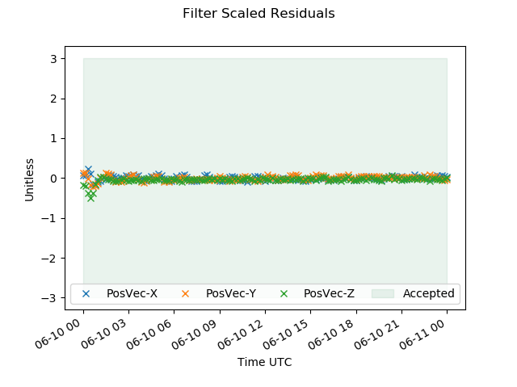

Throughout this exercise, we have employed some numbers that affect the filter performance, without really explaining where they came from. These are things like the magnitude of the process noise, the sigma and half-life for estimation of the coefficient of drag, and the initial orbit state uncertainty. In an exercise using simulated data, it is not hard to find values that work well, since we already know the “truth” that was employed in the simulation. When working with real mission data however, the situation is much different. You may have some initial guess of the coefficient of drag, but you might not know the error in your guess, or how much the coefficient of drag might vary due to possibly dynamic spacecraft area. Even deciding which parameters to estimate and which to apply can be a difficult question to answer. The process of finding appropriate values for all the parameters that affect filter performance is filter “tuning”. The goal of filter tuning is to achieve a filter that runs continuously (using warm starts) with minimal need for reinitialization, and that yields a covariance that hopefully realistically captures the true orbit uncertainty. The process of tuning a filter often requires analysis and experimentation with all the parameters just mentioned. It is furthermore a good idea to examine filter performance under a range of your spacecraft’s environmental conditions. For example, a tuning for a low-Earth spacecraft that works well during solar minimum may be stressed or fail during solar maximum. We can offer a few tips to those new to the filter tuning game.
The Spacecraft initial OrbitErrorCovariance represents the uncertainty in the initial spacecraft state you are providing on the Spacecraft object. In general, an “order of magnitude” guess is sufficient for the initial covariance. The filter will soon “forget” this initial value anyway as it automatically adjusts the covariance in response to the measurements and process noise. While the OrbitErrorCovariance is a full 6x6 matrix, common practice is to specify only the diagonal elements, representing the uncertainties in the initial position and velocity components. To ascertain whether your values are appropriate, examine the filter output at the start of the run. If your initial state is close in time to the first measurement and the filter diverges (begins sigma-editing most or all data) immediately, or very soon, after the first measurement, adjust the OrbitErrorCovariance. An OrbitErrorCovariance that is too small will result in immediate data editing (“divergence”) due to the scaled residual edit check failing to capture the measurements. However, an OrbitErrorCovariance that is too large can also cause divergence. If the initial uncertainty is too large, the filter will accept the first few measurements, but the covariance will collapse too rapidly around a still poorly-estimated state, which will likely lead rapidly to divergence. Use of measurement deweighting can help ameliorate this condition (see the ExtendedKalmanFilter MeasDewighting parameters). If possible, it is best to work with an initial state that has an epoch close to the first measurements. If your initial state is not close to the first measurement, propagation of the initial state to the time of the first measurement introduces process noise, which means you will need to try to tune both the initial orbit uncertainty and state noise model at the same time.
Choosing appropriate values for stochastic models like a first-order Gauss-Markov drag model requires some experimentation. For the spacecraft coefficient of drag, you can begin from the basis that most coefficients of drag are between 2.0 and 2.5. A long half-life (one to ten days) is usually a good choice, especially if you don’t know the actual value of drag very well. A short half-life will cause the drag estimate to rapidly decay back to the nominal (steady-state) value, which is not a good option if your chosen steady-state value is not close to the true value. A longer half-life allows the filter more time to sense and adjust to the true value.
Choosing appropriate process noise can be the most opaque and mysterious part of filter tuning. The units of acceleration noise sigma for GMAT’s StateNoiseCompensation algorithm are km per second^(3/2), which does not lend itself easily to an intuitive interpretation. Reference 2 recommends the following starting point for along-track process noise for near-circular orbits dominated by along-track error (as is the case for most spacecraft affect by drag):
Where
Process noise drives the growth of position and velocity uncertainty in the absence of measurements. The effect of this is most easily seen by examining plots of position and velocity uncertainty and looking at how large they get while propagating the orbit between tracking passes. Try to make a judgement whether the growth is consistent with what the actual orbit uncertainty might be. For example, a low-Earth orbiting spacecraft receiving one or two 20-minute passes per orbit might be expected to experience less than 100 meters prediction error per orbit, if the orbit is well-estimated and drag conditions are not rapidly changing. If plots of position covariance show the uncertainty growing to a kilometer between passes, it is likely that the process noise is too large. It can be easy for a filter with too much process noise to look like it is performing well, because it will generally easily accept all of the incoming measurement data. However, the estimated state will not be as accurate as it could be and will likely predict poorly.
Examining the “pre-update” residual of the first measurement of each tracking pass is a useful exercise. The pre-update residual is the filter state measurement residual prior to incorporating (or rejecting) the measurement. This gives you an indication of how well the filter is predicting. Ideally these first-measurement pre-update residuals should not be biased (should not be predominantly positive or negative). Under most conditions, prediction error is larger than measurement noise, so the population of first measurement residuals should roughly reflect the state prediction accuracy. The Filter Measurement Residuals section of GMAT’s filter output report shows pre-update residuals. Examining plots of pre-update residuals is usually more useful than scanning the report visually.
There are three essential tools for assessing filter performance – scaled residual plots, filter-smoother consistency checks, and ephemeris comparisons.
“Scaled residuals” or “residual ratios” are the filter raw measurement (pre-update) residual divided by (roughly) the sum of the state uncertainty and measurement noise. The scaled residual is the metric the filter uses when deciding to accept or reject a new measurement. If the scaled residual exceeds the filter ScaledResidualThreshold, the measurement is rejected by the sigma-edit criteria. Another very useful aspect of the scaled residual is that it is dimensionless, which means it gives you a way to examine the processing of all measurement types in a single plot, rather than looking at separate plots of Doppler, range, and angle residuals. You can see the residual ratios in the Filter Covariance Report section of the GMAT filter output report file, but viewing them in a graph (as we did previously in Section 3 above) is much more useful. A scaled residual plot can quickly show you in a glance how much of your data was accepted (below the scaled residual threshold) and how much is rejected. We expect a well-tuned filter to accept nearly all incoming measurements (except for those known to be erroneous, biased, or otherwise anomalous).
Scaled residual plots can also tell you other useful things about how the filter is performing. Take a look at the scaled residual plot shown below.
|  |
If we just looked quickly at our filter output report, we might be happy with this run, because 100% of the data was accepted. However, the scaled residual plot shows that all of the scaled residuals are squashed on a line close to zero. This tells us that the divisor in the scaled residual computation (the sum of the process noise and measurement noise) is much larger than the raw measurement residual. From this, we can conclude that either the process noise or assumed measurement noise is too large. (If you see a plot like this, it is most often the case that the measurement noise is too large. For reasonable values of process noise, the “spread” of scaled residuals is indicative of how large the modeled measurement noise is relative to the actual measurement noise.) Mathematically speaking, we are not extracting as much value from the residuals as we should be. A well-tuned filter should spread the scaled residuals more evenly through the full range of the scaled residual acceptance region. While strictly speaking it might be considered best to see the scaled residuals cover the entire scaled residual acceptance range (with maybe even a little spillover), in operational practice it usually good to leave a little overhead (perhaps 1-sigma) between the envelope of scaled residuals and the scaled residual threshold. This allows the filter to be more robust to small unpredictable variations that come from solar activity, mis-modeled media corrections, small measurement biases, and the like.
Secondly, when running both the filter and smoother, filter-smoother consistency checks are very useful for assessing your tuning. As was described in above, we should expect that the filter state and associated uncertainty are statistically “consistent” with the smoother state and its uncertainty. For low-Earth spacecraft especially, it is typical for the filter-smoother consistency metric to occasionally stray outside the ideal range, but excesses should not be extreme or of long duration. Poor filter-smoother consistency is a sign that the filter tuning is at least somewhat amiss. Poorly-modeled maneuvers can be one source of poor consistency. In this case, intervention is not typically warranted, as the consistency should return to normal in later post-maneuver runs. Short spans of data editing, sudden solar activity, or other temporary events affecting force modeling can also cause transient issues with filter-smoother consistency. Temporary excesses of the consistency metric are not usually a problem as long as they can be associated with some known or suspected phenomena. Consistently poor filter-smoother consistency should be addressed by reexamining filter tuning in the areas of propagation model fidelity, process noise, and estimated parameter modeling.
Lastly, ephemeris compares should always be performed, and most importantly, trends of predicted accuracy should be maintained and periodically compared against mission requirements and past results. Prior to launch, most missions perform detailed analysis to determine the proper tracking schedule and measurement types needed to meet mission orbit accuracy requirements. Routine navigation operations should assess orbit determination performance against these requirements. Both predicted and definitive ephemeris data should be generated each time the filter is run, and the accuracy of each new prediction should be later assessed against a definitive ephemeris to measure the prediction error. Keep a record of prediction error over consistent spans that are relevant to mission requirements. For example, if your mission has a requirement of a 48-hour prediction accuracy of better than 2 kilometers, make sure that every filter (or smoother) run generates at least 48 hours of predicted ephemeris data. Compare this prediction later to a new definitive filter ephemeris to determine the accuracy of the prediction. Besides ensuring that you are meeting mission requirements, comparison of actual prediction accuracy to predicted orbit uncertainty covariance is a useful way of assessing the realism of the filter predicted orbit covariance.
Here are some additional tips to help develop your “filter intuition”.
If the state estimation error is very small or the measurement is very noisy, the state change when incorporating a measurement is small and the filter “trusts” the current orbit estimate more than the new measurement. This is the situation if the state is “well-known” or the observation is low-quality.
If the state is poorly known or the measurement is very good (low noise), the state is strongly corrected by the new measurement. In this case, the filter is “following the data” more than trusting the state estimate.
The estimation error covariance after the measurement update is always less than the estimation error covariance before the measurement update. Using an observation always reduces the orbit error covariance, no matter how bad the observation is. Addition of process noise always increases the state uncertainty. So there is a balance here – incorporating a measurement always decreases the state uncertainty and process noise always increases the state uncertainty. Filter convergence and long-term performance depends on this balance. If measurement or process noise are too small, the orbit error covariance may become too small and the filter may begin to reject good measurements. The filter will eventually diverge – this is called “smugness”. If process noise is too large, the filter will predict poorly and have little “memory” of state information. The filter state will depend mostly on only the latest measurements and will act like a short-arc batch least-squares estimator. It is helpful for a filter to have a “memory” of prior measurements, since this allows the filter more accurately estimate sometimes hard-to-observe parameters like drag or orbital plane.